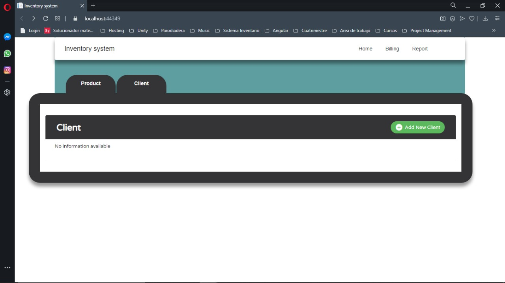
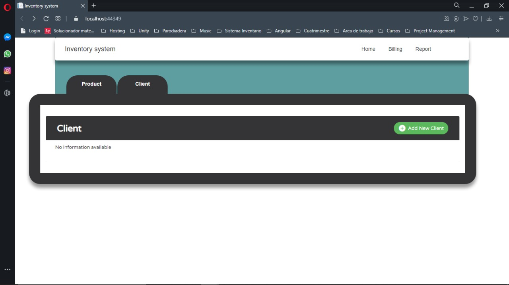

Este proyecto será principalmente una plataforma donde almacenamos, borraras, actualizará, eliminará y tendrá filtrado ya sea productos o clientes para obtener datos específicos, esa como función principal y más urgente tenerla lista para hacerla de manera más automatizada más adelante. Además se tendrá la elaboración de facturas las cuales también se almacenarán para cada cliente existente y que esten activos de la tienda, este con su correspondiente reportes los cuales serán filtrados y podrán ser verificados. Cabe destacar que tendrá cierta seguridad para el momento de salir a un mercado amplio y customizar el aplicativo, que es el manejo de roles para cada usuario con su respectivo logueado y/o registro de los tales mencionados. Todo esto previsto para la primera fase del proyecto. Para la segunda fase se tiene propuesto las siguientes características; reportes y manejos financieros y contabilidad totalmente automático de la tienda, reporte tanto de los clientes como ya sea de los productos existentes de la tienda y por último un manejo gráfico-estadístico de la tienda.
 
